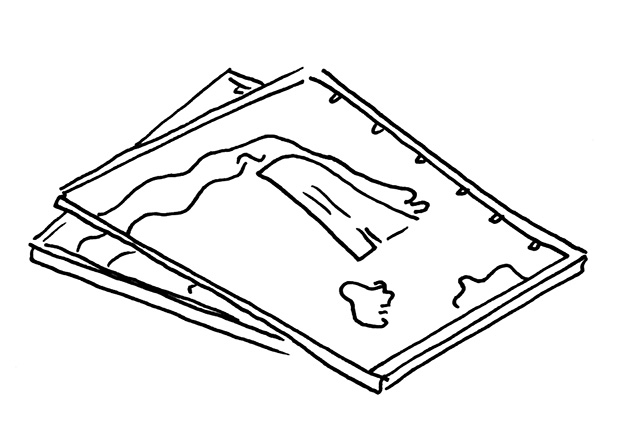
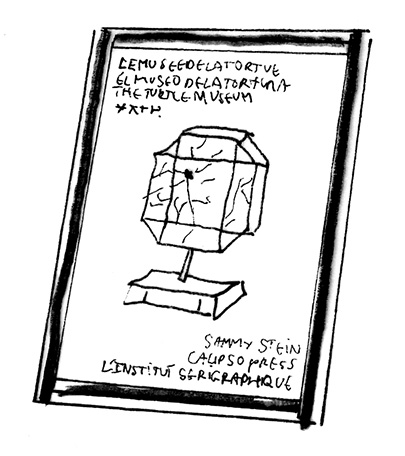
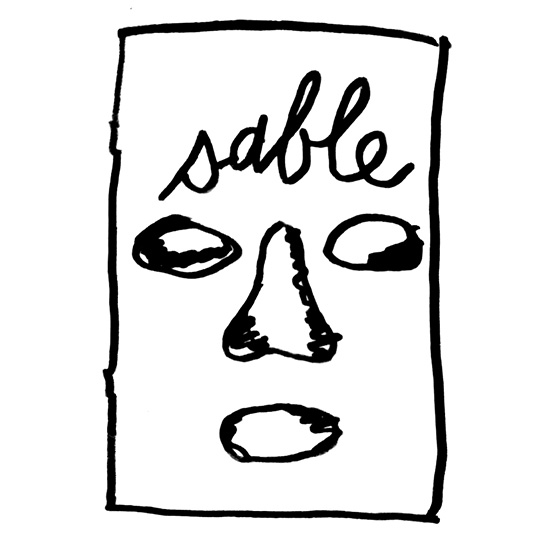
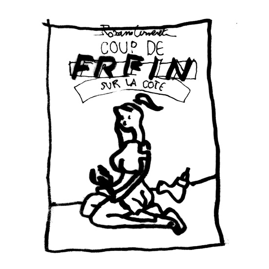
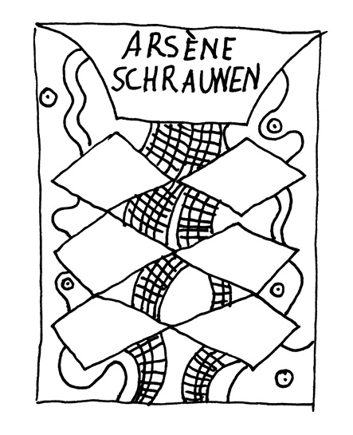

Jean-Philippe Bretin – entretien et sélection
Designer Graphique
Cofondateur du collectif Modèle-Puissance et de la revueCollection
Design de la revueLagon
Enseignant à l’ENSA, Nancy
LG Peux-tu me parler de ton parcours ?
JPB J’ai étudié à Estienne, en DSAA « création typographique », après un BTS. Mon diplôme n’était pas du dessin de caractère mais plutôt un diplôme assez expérimental. Ça s’éloignait assez de la typo, c’était sur la lettre à l’échelle du corps. J’ai appris dans les grandes lignes le dessin de caractère mais je n’étais pas fait pour ça. Je préfère utiliser les caractères des autres. Après, j’ai travaillé pour des studios. Un qui s’appelle Grand Ensemble et puis chez DeValence jusqu’en 2016. C’est à peu près en 2016 que j’ai commencé à enseigner. J’ai fait un remplacement à Amiens durant un semestre. Cette année j’enseigne aux Beaux-Arts de Nancy. Je donne un cours de dessin et d’édition qui est aussi lié à ce qu’on fait avec Collection. On est une équipe composée de personnes ayant une pratique artistique tout en étant designers, dessinateurs, éditeurs.
Le projet de la revue Collection a débuté à peu près un an après être sorti de l’école. C’est aussi un moment où on avait un autre projet avec Julien Kedryna, Vanessa Dziuba et Nicolas Nadé qui s’appelait Modèle Puissance. Un collectif très porté sur la question du dessin et de son exposition, son édition. C’était un moment où on était à fond dans le dessin ! C’était assez excitant, c’était le moment aussi où les réseaux sociaux ont commencé à devenir vraiment intéressants pour les artistes. Parce que vers 2007, 2008, il y avait ce côté très naïf et très excitant des réseaux sociaux « tiens, je t’invite à faire une expo » ou « viens, on fait un fanzine ». Je parle souvent de cette période car elle va de pair avec des mutations qui ont également lieu dans le champ de l’art. Même aujourd’hui, tu te rends compte à quel point les réseaux sociaux influencent la manière de curater des expositions, leur scénographie… Tout le renouveau des fanzines, me semble lié à cette époque-là.
Il y avait eu une grosse vague en France dans les années 90, avec pas mal d’artistes et éditeurs comme Pascal Doury, Bruno Richard, Le Dernier Cri, Kérozen, etc. qui se retrouvaient au Regard Moderne, dans des librairies importantes. Après, il y a eu une baisse de vitesse. Puis j’ai l’impression qu’à ce moment, entre 2007 et 2008, il y a eu un gros retour au dessin, à l’édition et au partage. Il y avait plein de dessinateurs, de collectifs qui avaient l’air intéressants mais on ne savait rien sur eux. On se disait « ces gens ont l’air d’avoir les mêmes intérêts que nous, comment on fait pour en savoir plus ? ». On manquait d’informations donc on s’est dit qu’il fallait qu’on aille les rencontrer. C’est comme ça que nous avons édité le premier numéro de Collection, sans n’avoir rien publié d’autre avant que quelques fanzines. On ne souhaitait pas sortir un nouveau fanzine, mais une vrai revue, bilingue, diffusée en librairie et à l’international. Nous sommes donc allés voir le CNAP pour un financement, que nous avons obtenu pour le premier numéro, et c’est ce qui a lancé le projet. Dans Collection, il y a depuis le début, l’espoir que les artistes parlent d’autre chose que de leur travail, fassent ressentir leur état d’esprit, confient des anecdotes, des éléments de leur passé …
LG Mais… je m’en souviens, je travaillais dans une librairie à l’époque, Section7books, et on n’avait pas beaucoup de livres relatifs au dessin. Or les clients nous l’ont beaucoup demandé quand il est sorti. En 2010 ?
JPB 2010. Voilà c’est à ce moment-là qu’il est sorti. Les numéros 1, 2, 3 avec cette formule. Et après les numéros 4 et 5 qui ressemblent à ça.
LG Qu’est ce qui vous a donné envie de changer de formule ?
JPB Elle ne correspondait plus à ce qu’on avait envie de faire. Il fallait qu’on change surtout le format, qui était trop petit. Quand tu es ton propre éditeur, rien ne t’oblige à ne pas changer, en fait. Et puis on a bien fait car ça a plutôt bien marché. Surtout la structure de l’objet revendique le propos de Collection. Chaque entretien est composé d’un cahier de 16 pages en noir et d’un cahier de 16 pages en couleur, donc ça fait 32 pages par article, ce qui est assez généreux. Chacun a le même nombre de pages. Par exemple Pierre Guilhem, qui est un artiste assez jeune et peu connu, a autant de pages que Ronan Bouroullec. Ça fait partie des principes de Collection, de ne pas hiérarchiser, de donner la même place à tout le monde. Aussi, les textes sont imprimés en premier sur ce cahier en noir et blanc, et si le texte s’arrête, les images démarrent. Donc plus il y a de texte, moins il y a d’images.
On revendique donc notre attachement aux textes des entretiens. Il n’y a pas d’autre types de textes – des rubriques par exemple, il n’y a même pas de première page, elle commence déjà par un entretien.
LG Par contre, dans le numéro 5, il y a un sommaire dès la deuxième de couverture.
JPB Là, on a mis un sommaire, oui. On s’est toujours posé la question de l’édito, et on n’a jamais réussi à la résoudre, parce qu’on n’arrive jamais à prendre la parole. Donc dans celui-ci,
(Jean Philippe montre le numéro 4, puis le 5 de la revueCollection)
notre édito c’était cette image : Leonardo DiCaprio, dans Titanic, qui dessine Kate Winslet. Et dans celui-là notre édito, c’est ce tableau, qui fait aussi office de sommaire. Il présente les lieux où ont été fait les entretiens, le nombre de signes, les durées — de 2h à 8 mois! Toutes les conditions de production des entretiens. Il est aussi précisé quand ceux-ci se font par Skype, e-mail ou chat.
LG Vous êtes devenus un peu journaliste comme ça.
JPB Justement, c’est aussi ce qu’on avait envie de faire, mais personne n’écrit très bien parmi les membres de la revue. On s’est dit qu’on allait faire des entretiens, que ça serait plus simple. Que les gens qui parleraient à notre place. Mais en fait — d’ailleurs avec votre projet, vous devez vous en rendre compte…
LG La transcription, c’est une forme d’écriture.
JPB Oui, la transcription, c’est vraiment de l’écriture : tu ne peux pas transcrire exactement ce que les gens disent, ça ne fonctionne pas. Parce que, d’abord, tu es obligé d’enlever tous les tics de langage. À l’oral les gens ne finissent pas leurs phrases, les laissent en suspens, donc quant tu transcris, quand tu édites, tu dois essayer de comprendre l’intention, les répétitions. Et puis la retranscription, c’est pénible… dédicace à celle ou celui qui retranscrit.
Et puis il faut que ça reste vivant. C’est donc un dosage entre rester vivant, garder une certaine oralité, mais faire en sorte que la lecture reste agréable. Il y a une balance à trouver. Certains entretiens ont étés faits par mail. Là, les propos sont en général un peu plus réfléchis. Mais ce que tu gagnes dans l’affirmation d’un propos, tu le perds en spontanéité, en humour aussi.
LG Quel est ton rapport à la bande dessinée traditionnelle, avec le découpage des rôles, auteur – dessinateur – scénariste, avec le format 48cc (N.D.L.R.: 48 pages, cartonnée et en couleur), etc.
JPB En fait je n’ai pas une grande culture de la bande dessinée. J’étais à fond dans Tintin quand j’étais petit, mais ça, c’est assez banal. Je le dessinais, j’étais Tintin à fond, surtout les produits dérivés etc.
LG Ah oui d’accord !
JPB Après, trou béant. Mangas : je n’en ai pas lu; comics : jamais vraiment non plus. Oui, quasiment exclusivement Tintin. Et Quick et Fluke. Un peu Astérix. Et gros trou, énorme, jusqu’à un peu plus tard, après le lycée et la faculté. Là, on a commencé à me dire «tu sais que la bande-dessinée indépendante existe?», mais j’étais vraiment passé complètement à côté ! J’ai découvert l’Association, qui a été un peu la porte d’entrée, vers 2004. Donc j’ai essayé de rattraper mon retard: l’Association, puis les américains: Charles Burns etc. Mais les mangas et les comics, je connais vraiment très mal. Je connais donc plus la bande dessinée indépendante, plutôt française et américaine, sans être non plus un expert. Je connais les classiques.
Sur le 48cc : après la lecture de Plate-bandes, de Jean-Christophe Menu, qui a un peu introduit ce terme-là, la remise en question de ce format m’a vraiment intéressé. Je n’en avais jamais vraiment pris conscience. D’ailleurs c’est comme ça qu’ils ont commencé à l’Association: éloigner la bande dessinée de l’album, et puis, de ne plus vouloir le héros. Revendiquer l’auteur devant le héros, ça c’était important. Et puis éviter la standardisation du 48cc, dans lesquels on retrouve souvent la même structure, les mêmes histoires, les mêmes papiers, les mêmes couleurs. Avec Lagon, il y a aussi cette mission, de se dire qu’on peut aussi bien éditer de la bande dessinée. D’ailleurs il y a cette éditeur belge, Frémok, à Bruxelles, qui édite Cowboy Henk, tout ça. Leurs livres sont super bien édités.
LG Il y a une question qu’on arrive pas très bien à poser, ni à résoudre : on a tous eu des expériences un peu similaires dans nos études de graphisme. À savoir que même si on aimait dessiner, on a toujours étés un peu découragés.
JPB Oui c’était possible à côté mais tu montrais pas ça aux profs.
LG Ah c’était ton cas. Moi j’ai juste arrêté.
JPB Je n’étais pas du tout le collégien qui dessine bien déjà, le bon en dessin de la classe. Ce qui m’a un peu donné envie de dessiner, c’est Bible de Tony Papin. Un jour, en mise à niveau je crois, quelqu’un ramène ça. C’est ce qui m’a fait comprendre que même sans bien dessiner, c’est possible de faire un livre intéressant. C’était la première fois que je voyais un livre type fanzine, mais je n’avais pas vraiment conscience qu’il était tiré à une centaine d’exemplaires. Ce livre a été vraiment, quelque chose de marquant pour moi. Une petite édition d’un artiste rennais.
Il y a une grosse scène du fanzine à Rennes : de la bande dessinée indépendante et puis aussi du fanzine, Nylso etc, et Papin aussi. Ils font le genre de livre qui fait prendre conscience: « d’accord il n’y a pas besoin d’être un geek du dessin », et aussi, qu’on est pas obligé de faire de la bande dessinée traditionnelle.
Cette forme de dessin d’humour, mais qui n’est pas non plus Charlie Hebdo, j’ai compris après que ça venait David Shrigley ou ce genre de personnes. Aussi, ce type de dessins rentre dans des galeries, est lié à l’art contemporain autant qu’à la bande dessinée. C’est ça qui m’intéresse, les gens qui sont un peu entre les deux, qui sont assez rares en fait. Il y en a d’ailleurs beaucoup qu’on invite dans Collection. Des gens comme Masanao Hirayama, Leon Sadler, Yannick Val Gesto, qui naviguent un peu entre les deux. Mais ce type de pratique, je pense qu’on y pense peu à l’école. On essaie de changer ça, mais pour certaines générations, pour pas mal de gens, ce n’est pas possible la bande dessinée.
LG Oui, on avait grandi.
JPB Oui. Nous, nos profs n’étaient pas du tout ouverts à ça. Mais c’est aussi la faute de la BD. Je suis très critique, je trouve qu’il y a beaucoup de publications très faibles dans la bande dessinée. C’est peut-être ce qui fait que ça reste aussi très méprisé. Il faut vraiment s’y connaître pour trouver des bons livres, je trouve.
LG C’est pas faux, en effet. Aussi, il y a une vraie surproduction de bandes dessinées.
JPB Oui, la surproduction. Et puis aussi, quand tu aimes bien ce médium, tu te dis que c’est vraiment dommage de voir ce qui se fait. Déjà, formellement, je trouve que dans la grande majorité et même chez les bons éditeurs, il y a beaucoup de livres mal édités, et formellement peu intéressants. Ca reste dans des codes qui sont très souvent ringards. C’est aussi pour ça que je dis que c’est de la faute de la bande-dessinée.
LG Quand est-ce que la relation entre l’objet-livre et la narration deviennent intéressantes ?
JPB Ce qui est paradoxal, c’est qu’il y a des BDs mal éditées qu’on a quand même lues avec plaisir. On a quand même adoré ces BDs parce qu’on s’est habitués à ce que ça puisse être mal dessiné, avec une typo horrible! Alors que j’ai plein de livres super beaux que je n’ai jamais lus ! On a tous ça, nous les graphistes, des livres qu’on adore, mais qu’on n’ouvre jamais.
LG Ah oui, tellement !
JPB Mais c’est un rapport assez sculptural au livre, c’est parce qu’il est texturé, qu’il est produit avec intelligence, avec des matières appropriées. Et le récit est presque secondaire. Ces livres, tu peux des fois ne jamais les avoir vraiment ouverts, c’est pas grave.
LG Par rapport à Gouffre, tu as dessiné dedans et tu l’as, en plus, conçu ?
JPB J’ai participé en tant qu’auteur à tous les numéros. On me demande parfois de faire de la bande-dessinée. Mais maintenant il n’y a que pour Lagon que j’accepte. Je n’aime pas vraiment en faire ! Mais j’essaie quand même de voir comment, en tant que designer et dessinateur je peux trouver ma place.
Lagon est né de la rencontre de deux auteurs, Alexis Beauclair et Sammy Stein. Ils ont débuté le projet avec Bettina Henni, qui est auteure, et imprimeuse pour Papier/Machine, et Séverine Bascouert, qui est sérigraphe. Sammy et Alexis avaient envie de fonder une nouvelle revue ensemble et d’y avoir un rôle de direction artistique, dans le sens de forger une certaine idée de la bande dessinée à travers un sommaire. Sur le premier numéro, ils m’avaient invité à faire quelques pages, qui sont là. Et, au dernier moment, environ une semaine avant le lancement, ils ont réalisé qu’ils avaient besoin de graphistes pour mettre en page le sommaire, faire un flyer pour annoncer le lancement… Nous nous en sommes chargés en quelques heures avec Jérémy Perrodeau, un ami graphiste qui était aussi au sommaire de Lagon. Puis au fur et à mesure des numéros j’ai travaillé plus en amont sur le design global de la revue, réfléchir à l’objet et penser la communication générale.
Une des caractéristiques importante est liée à l’économie du projet — ça peut paraître banal mais ça ne l’est finalement pas tant que ça dans ce genre de revues — c’est de payer les contributeurs (auteurs, graphistes, traducteurs…). Ce n’est pas énorme mais ça augmente au fur et à mesure des numéros. Et donc il s’agit de passer commande aux auteurs, d’être exigeant, pas de dire « contribution ouverte, envoyez vos pages ! » On leur dit « voilà on aime bien votre travail, on aimerait bien voir ce que ça pourrait donner sur tant de pages, avec telle technique ». On les oriente, il n’y a pas de thème mais on peut soumettre des directions.
Pour parler de la fabrication, dans Gouffre, ces pages par exemple étaient imprimé en offset celles-ci en riso. Toutes les impressions offset ont été livrées à l’atelier de riso chez Papier Machine. Ensuite il fallait trier, assembler les séquences offset/riso, relier, imprimer la couverture en sérigraphie et la façonner. C’était très artisanal, plus d’un mois de travail entièrement manuel. C’était un moment important pour l’équipe mais le fait-main a ses limites, par exemple la reliure n’était pas assez résistante. Sur le dernier numéro, Marécage, elle est réalisée par l’imprimeur offset.
LG C’est avec l’argent de la vente des anciens numéros que vous pouvez financer les nouveaux ?
JPB Non, en fait le compte est à zéro une fois que tous le monde est payé, donc chaque nouveau numéro est un pari, on le fait en espérant que ça se vende ! Après, j’adore parler de l’économie du projet. J’ai des tableaux à te montrer si tu veux.
C’est un projet qui n’est pas subventionné par des institutions. Il nous arrive d’obtenir quelques partenariats par contre. Il y a le fond de dotation agnès b. qui avait donné un peu d’argent. Riso France ou les imprimeurs nous font une remise en mettant leur logo. Proll, une marque qui produit des encres de sérigraphie, nous donne quelques pots… Ce sont de petites économies sur un budget de plus de 50 000 euros. Ce « pari » repose sur le fait que les précédents aient marché et on estime qu’on peut continuer ainsi. L’enjeu est donc de vendre rapidement un grand nombre d’exemplaires pour payer en priorité l’imprimeur et les contributeurs extérieurs, nous nous payerons ensuite au fur et à mesure. Avec Collection, jusqu’au numéro 5 nous n’avions pas vraiment réussi, ni cherché d’ailleurs, à se payer en tant que graphiste ou auteurs des articles. Avec Lagon on a pu à trouver un équilibre un peu plus rapidement.
LG À combien était vendu Gouffre ?
JPB 45 je crois. Le prochain ce sera 48 peut-être, parce que c’est vraiment un plus grand format. Il coûte en gros 43 à faire, il est vendu 45. On ne fonctionne qu’avec de la vente directe. On ne pourrait pas passer par un distributeur, qui prend 60%.
LG Et quand les gens achètent en ligne, ils payent les frais de port en plus.
JPB Oui, ils payent 10 euros.
LG Et donc vous arrivez à les vendre assez rapidement ?
JPB Oui. Et ça se vend surtout aux États-Unis. En France un petit peu, mais la moitié part aux États-Unis. Le projet est assez suivi là-bas. Parce qu’il y a vraiment une culture de la bande dessinée, pas forcément hyper avant-garde, mais il y a un vrai intérêt. Il y a des gens qui parlent sérieusement de la bande dessinée. Nous, on ne peut jamais acheter de livres venant des États-Unis, parce que c’est 25 euros de frais de port, alors que nous on les fait à 10 euros. Et puis des libraires là-bas l’achètent, mais on ne sait pas combien il le revende.
LG Je suppose que c’est grâce au tarif «Livres et Brochures» de La Poste que vous pouvez envoyer autant de livres là-bas?
JPB Oui on n’utilise que ça. Tout ne repose que sur ça. Notre économie repose beaucoup sur ça parce que 60% de nos ventes se font à l’étranger; si le «Livres et Brochures» s’arrête… On flippe tous les ans.
LG Ah oui ça doit faire peur. Un peu comme quand en 1981 la dispense de timbrage à été retirée à la presse indépendante, et que ça a tout changé. C’est très intéressant de mettre bout à bout toutes ces choses concrètes qui rendent possibles des projets d’édition.
JPB Oui, si ça s’arrête, ça veut dire 25 euros pour envoyer un livre, donc ca veut dire qu’on ne peut plus en vendre. Et la revue Lagon existe aussi grâce à Internet. Sinon on n’aurait pas été visibles, comment on aurait pu toucher aussi aux États-Unis ?
LG Ah oui. Je pensais que les gens vous connaissaient à cause des auteurs, tout simplement.
JPB Ça, on ne sait pas trop comment ça s’est fait. C’est marrant, parce qu’il y a aussi cette revue, je ne sais pas si tu l’as déjà vue, qui s’appelle Mould Map, éditée par Landfill. Alors c’est toujours dur de comparer parce que c’est vraiment costaud, elle est très inspirante. C’est fait par des gens qu’on connait, qui participent aussi à Lagon, on invite par exemple tout le temps Léon Sadler. Ils ont mis vraiment la barre très haut. C’est un vrai challenge de voir ce genre de livres. Ils font partie des gens qui essayent de réinventer un peu des choses en bande dessinée, qui se disent qu’il peut y avoir une nouvelle écriture, et une place pour le design aussi dans la bande dessinée. Parce que je pense que c’est un domaine qui est délaissé.
Il y a quand même quelques graphistes qui s’intéressent au domaine. Dans Mould Map, ils sont assez spectaculaires dans la mise en forme, très référencés. C’est un univers très baroque, et très futuriste aussi. Et au contraire, l’idée pour Gouffre, c’était plus de se dire qu’on peut aussi faire des choses assez minimales, avec les typos sans-serif en assez petit corps, avoir une certaine sobriété au niveau du graphisme.
(Jean-Philippe montre Mould Map #7)
JPB Dans le travail de la couleur, ils sont allés assez loin. Ils avaient financé ce numéro à l’aide d’un Kickstarter, ils avaient récolté beaucoup d’argent. Il n’y a que les gens qui avaient participé qui ont pu l’avoir, ils se sont faits dépasser par le succès du système. Ça veut dire que c’est un livre qui n’a jamais été présent en librairie, tellement ça avait marché en pré-commande. Et le réimprimer c’était impossible car trop complexe comme production, et puis je suppose que tu n’as pas envie de refaire un livre que tu as déjà fait. Et aussi, ils ont eu une mauvaise surprise. Ils avaient estimé un poids qui n’était pas le bon. Tout l’argent qu’ils avaient récoltés grâce au Kickstarter a été englouti par les frais de port. Donc ils ont perdu 20 000 euros sur ce projet.
LG Ah j’entends souvent des histoires de poids mal calculé avec les livres financés par Kickstarter et autre.
JPB Oui, on ne fait pas de crowdfunding, ça prend du temps. Si tu as mal estimé le poids de l’objet…
LG Peut-être qu’ils n’avaient pas fait de maquette.
JPB Ou le tarif avait changé entre temps. Ça veut dire que tout ton projet peut se jouer sur quelques grammes, comme tu dis, on est dans le très concret. Quelques grammes au-dessus, et au lieu d’être 10 euros à envoyer, cela vaut 25. Et fois 1000 exemplaires, ça fait 25 000. Donc ça fait 15 000 euros en plus. Et comme tu avais cet engagement de Kickstarter, tu dois l’envoyer, t’es obligé de le faire. Mais après ça marche pareil pour les jeux vidéos ou pour n’importe quoi. Mais on en revient à ces questions.
LG Et ce livre,
(Laure montre le catalogue des plus beaux livres suisses de 2005)
pourquoi tu l’as amené ?
JPB J’avais ramené des choses un peu marquantes, comme le livre dont j’ai parlé tout à l’heure qui m’a lancé dans le dessin. Donc celui-là a déclenché aussi pas mal de choses pour moi. Un livre dont le contenu est juste la forme des livres référencés dedans. Il y a une reproduction d’une page de chaque livre primé sur son papier d’origine, c’est complètement décomposé. J’ai toujours aussi les livres de Maximage qui sont dans ce genre là, de livre-outil, de livres un peu méta. Et aussi, comme beaucoup, on fait des tests. Un peu comme Super-Structure, mais eux ils sont deep quand ils vont dans cette direction. Ils vont vraiment très loin dans cette question des tests d’impression, et des papiers. Et Sukrii [Kural] est très calé en impression, il connait toutes les machines. Sur la question de l’expérimentation dans l’imprimé, c’est eux qui vont le plus loin. En étant aussi dans une économie assez réduite.
Dans Collection, quelque chose qu’on essaye aussi de revendiquer, c’est de questionner pourquoi la bande dessinée ne regarderait qu’elle-même ? Le roman, voire le cinéma, ne regardent pas la bande dessinée. La bande dessinée devrait peut-être observer les jeux-vidéos, la mode, l’art contemporain, des domaines où les formes sont riches, et où l’innovation formelle se déroule. Et ça c’est un problème de la bande dessinée : elle ne se regarde qu’elle-même. C’est pour ça que tu arrives à avoir des auteurs, dessinateurs, même très jeunes, qui font encore des productions qui ne regardent que la bande dessinée.
LG Est-ce que ça vient un peu des écoles de bandes dessinées ?
JPB Je ne sais pas trop, parce qu’il n’y a quand même pas beaucoup d’écoles de bande dessinée. Dans la génération d’auteurs qu’on connaît, beaucoup viennent des Arts Décos de Strasbourg. Je connais un peu moins de gens d’Angoulême. Peut-être qu’ils se dirigent vers d’autres choses, qu’on regarde un peu moins.
Alexis Beauclair, il était aux Arts Décos. C’est marrant, on peu dire qu’il vient d’une promotion dorée. Dans sa classe, il y avait aussi les gens qui ont fondé les éditions 2024. Léon Maret, Simon Roussin je crois que c’était un peu après, mais il y avait aussi Marion Fayolle, tout un tas de gens qui étaient dans la même classe. Peut-être que je me trompe, mais je crois que c’était un ou deux ans d’écart en tout cas. Vers 2010 je pense, pas loin.
LG Tu parles de la section Illustration ?
JPB Oui, Illustration.
LG Mais qui dû changer à un moment, qui est devenue très BD ?
JPB En fait, c’était la première année où Guillaume Dégé est arrivé comme enseignant. Guillaume Dégé, c’est un artiste qui a une culture très importante de bande dessinée, qui a une collection de livres qui va du XVIIIe siècle jusqu’à des fanzines punk, en passant par les dernières productions aujourd’hui. Il a une culture vraiment immense, ça apporte beaucoup à ses étudiants. Et c’est aussi le moment où ils ont commencé à faire des revues en tant qu’étudiants. Et c’était un peu les premiers à faire des objets sérieux, avec des illustrations, après le livre de Simon Roussin, Nyctalope, et tout un tas de projets. C’était un peu l’âge d’or des étudiants de Strasbourg. D’ailleurs pas mal de gens qui en sont sortis vivent de la bande dessinée.
LG Pour en revenir à ton travail de designer dans la revue Lagon, comme tu t’occupes de la préparation des images, tu savais gérer ce type de processus ?
JPB La photogravure en riso elle est assez simple puisque tu la contrôles en direct. Mais dans Gouffre c’était la première fois qu’on avait de l’offset. Parfois on ne savait vraiment pas ce que ça pouvait donner, c’était un pari.
LG Mais de savoir par exemple qu’ici l’argent est à imprimer en premier, c’est l’imprimeur qui vous a dit ça ou vous y avez pensé vous-mêmes ?
JPB Comme je te disais, j’ai beaucoup étudié les livres de Maximage, les catalogues de Patrick Frey, les plus beaux livres suisses etc, en me demandant : «mais alors cette encre est imprimée en premier, en dernier ?» et en parlant aussi un peu avec eux. Ici on a imprimé avec de l’encre argentée, et l’argent sa spécificité est que, selon l’angle, c’est du blanc ou du noir en fait. Et donc il est simulé sur ton écran par un gris, ça n’a aucun sens. Donc tu ne sais pas du tout ce que ça va donner. Et aussi l’argent absorbe un peu les teintes que tu mets par dessus. Et dans l’autre sens, si tu le mets en dernier, il vient recouvrir entièrement.
Ces pages-là par exemple ne sont pas hyper réussies. L’idée c’était d’avoir juste un peu d’argent dans les gris pour que ça soit comme du crayon à papier, et le résultat est un peu trop rose. Mais je vois ça parce que je connais les images de base. Aussi, le rose fluo qui remplace du magenta c’est impossible à simuler à l’écran. Après on accepte aussi que ça soit un peu bizarre ces couleurs, ça n’est pas très grave.
On a utilisé un peu les profils de Color library qui marchent bien mais qu’il faut quand même vraiment beaucoup retoucher parce qu’ils mettent des taux d’encrage trop denses, qui ne s’impriment pas tels quels. Quand je faisais mes pages, je gérais complètement en direct. Mais sinon les auteurs nous envoient les images et après c’est nous qui mettons les couleurs spécifiques. Certains la traite un peu comme en sérigraphie, avec un calque en plus donc là ils le faisaient eux-mêmes. La revue maintenant, c’est un travail d’un mois et demi de photogravure. Avec Sammy on le fait ensemble, c’est assez intéressant quand on peut faire en direct.
LG Et c’est pas trop stressant la production de Lagon? Est-ce qu’il y a des problèmes ?
JPB Avec Lagon, on est vraiment dans le concret, plus qu’avec n’importe quel imprimeur, puisqu’en général tu envoies ton fichier à l’imprimeur et puis c’est bon. Là j’ai des coups de fil tous les jours sur des problèmes, parce qu’il y a un challenge technique.
LG Il faut quand même vraiment avoir confiance !
JPB Oui, un peu d’expérience. C’est l’avantage d’avoir bossé dans un studio, d’avoir entendu les gens auprès de qui j’étais assistant au début dire «c’est comme ça que ça se passe avec l’imprimeur». Quand tu as imprimé des livres, après tu sais ce que ça donne, tu sais sur quoi il ne faut pas se stresser et au contraire, les éléments auxquels il faut être très attentif. Mais chez les imprimeurs, je n’ai toujours pas trouvé l’interlocuteur qui me comprend. Souvent, la personne avec qui tu communiques ne connaît pas tout techniquement.
LG Il y a quand même des chefs de fabrication qui sont très compétents mais qui parfois ne comprennent pas pourquoi on veut faire certaines choses, on va loin dans la précision, on peut être tellement geeks parfois… Et pourtant certains vont chercher comment ça peut être réalisé. Le premier imprimeur avec qui j’ai travaillé était Die Keure en Belgique et il y avait cette personne… Serge, heureusement qu’il était là, qui me disait toujours: « Il n’y a pas de problème, que des solutions », alors que je stressais pas mal vu que je n’avais pas une grande expérience, et que j’ai pu faire quelques erreurs de débutante !
JPB On travaille bien avec Musumeci, en Italie, ça se passe toujours bien. Quelque chose d’important aussi, c’est que si il y a un problème, il vaut mieux le dire tout de suite. En France il y a beaucoup d’imprimeurs ne vont pas te prévenir : « il y a un problème, mais on va trouver une solution », ils vont plutôt te dire que tout va bien, et puis une fois que c’est imprimé : « oui, donc en fait il y a un petit problème. »
LG C’est de la sérigraphie celle-là ?
(Laure montre la couverture de Gouffre)
JPB Oui, c’est sérigraphie sur l’envers. Ça s’appelle de la vitrophanie. On a d’abord la couche jaune qui est imprimée, puis la couche de cette encre caméléon, et ensuite la couche noire, enfin bleue foncée. C’est pour ça, là ce que tu vois là, c’est la dernière couche, et en dessous tu peux voir que ça a été imprimé, sur un plastique transparent. Ça c’est le fruit des expérimentations de Séverine.
LG Comment décidez-vous de l’ordre des contributions ?
JPB On a fait la séquence au dernier moment. C’était lié aussi à des questions d’alternance de cette riso qui était un peu complexe, donc le sommaire n’est pas du tout dans l’ordre du livre. Et toutes les images sont vraiment retravaillées, on les a mises en négatif, on a fait plein d’expérimentations par rapport à ce qu’il y a à l’intérieur, on a changé les couleurs, on a profité du fait que là tout est imprimé en offset. Tout le sommaire ne ressemble pas à ce qu’il y a à l’intérieur, il n’est pas dans l’ordre. Toutes les pages sont un peu des expérimentations: « ah tiens, qu’est-ce que ça fait si non remplace le noir par de l’argent ? »
Et après le sommaire, ça commence par Manon Wertenbroek, qui est une artiste suisse, photographe. Ça ne commence pas par de la bande dessinée. Ça, c’est imprimé en offset donc je pense que ça va vraiment claquer, avec des couleurs hyper franches.
Je vous compose une sélection d’éditions qui – au-delà de leur intérêt graphique et narratif –
me semblent remarquables du point de vue de la justesse des objets, de l’impression et du design graphique.
Cowboy Henk vol. 3 : L’Art actuel, Herr Seele et Kamagurka, Frémok, 2016
Les éditions de Cowboy Henk chez Frémok sont d’une justesse rare dans la qualité des objets, la qualité du papier, le soin apporté à la typo, au lettrage, à l’impression des couleurs, aux pages de garde … Des objets simples et d’une parfaite cohérence, pensés dans leur globalité.
Home Camouflage/S-S 5.1, collectif, Super-Structure, 2018
Les publications de Super-Structure sont les seules à exploiter de manière radicale et approfondie le potentiel des techniques d’impression variées au service d’images narratives. C’est d’autant plus remarquable qu’ils le font avec des moyens financiers restreints.
Le musée de la tortue, Sammy Stein, auto-publié, 2017
Malgré des contraintes très forte (réalisé en un temps-record lors d’une résidence) Sammy Stein et Séverine Bascouert ont produit un ouvrage qui, sous ses airs de fanzine, invente une forme singulière de bande dessinée (sous forme de guide d’exposition traduit en 4 langues). Il est ponctué par des détails d’impression (sérigraphie, marquage à chaud d’une des pages intérieures, images glissées) qui participent pleinement à la narration et composent un objet entier.
Sable, Alexis Beauclair, auto-publié, 2015
Sable est un objet concis, modeste, qui prouve que la bande dessinée peut s’adapter à tous les formats et modes d’impression. Ouvrage manifeste, il met à jour à partir d’une simple contrainte formelle (considérer les points de trame de l’impression Riso comme des grains de sable) les liens profonds qui lient dessin, narration et impression.
Coup de frein sur la côte, Roxane Lumeret, coll. BD cul, Les Requins Marteaux, 2016
Un de mes ouvrages favoris de cette collection qui a su réactiver le format des bandes dessinées Elvifrance.
Arsène Schrauwen, Olivier Schrauwen, L’Association, 2015
Un ouvrage remarquable sur le plan du dessin, d’une grande modernité dans les techniques narratives et les thèmes abordés et parfaitement fabriqué !
Je reconnais quand même que la contrainte de rester francophone m’a donné du fil à retordre car j’aurais aimé proposer des éditions un peu plus avant-gardistes d’un point de vue formel et plus d’auteures (Mould Map chez Landfill, Joyride de Zoe Taylor chez Breakdown Press, Drifter de Anna Haifisch chez Perfectly Acceptable Press, des livres de chez 2dcloud…).
Je ne veux pas vous soumettre Marécage, le dernier numéro de la revue Lagon, mais je serai bien sûr ravi de vous le montrer et qu’il puisse intégrer votre sélection.